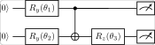

<!DOCTYPE html>
<html xmlns="http://www.w3.org/1999/xhtml">
<head>
  <meta charset="utf-8" />
  <meta name="generator" content="pandoc 3.10.2" />
  <meta name="viewport" content="width=device-width, initial-scale=1.0, user-scalable=yes" />
  <meta name="author" content="QuoNic" />
  <title>vqe</title>
  <style>
    /* Default styles provided by pandoc.
    ** See https://pandoc.org/MANUAL.html#variables-for-html for config info.
    */
    html {
      color: #1a1a1a;
      background-color: #fdfdfd;
    }
    body {
      margin: 0 auto;
      max-width: 36em;
      padding-left: 50px;
      padding-right: 50px;
      padding-top: 50px;
      padding-bottom: 50px;
      hyphens: auto;
      overflow-wrap: break-word;
      text-rendering: optimizeLegibility;
      font-kerning: normal;
    }
    @media (max-width: 600px) {
      body {
        font-size: 0.9em;
        padding: 12px;
      }
      h1 {
        font-size: 1.8em;
      }
    }
    @media print {
      html {
        background-color: white;
      }
      body {
        background-color: transparent;
        color: black;
      }
      p, h2, h3 {
        orphans: 3;
        widows: 3;
      }
      h2, h3, h4 {
        page-break-after: avoid;
      }
    }
    p {
      margin: 1em 0;
    }
    a {
      color: #1a1a1a;
    }
    a:visited {
      color: #1a1a1a;
    }
    img {
      max-width: 100%;
    }
    svg {
      height: auto;
      max-width: 100%;
    }
    h1, h2, h3, h4, h5, h6 {
      margin-top: 1.4em;
    }
    h5, h6 {
      font-size: 1em;
      font-style: italic;
    }
    h6 {
      font-weight: normal;
    }
    ol, ul {
      padding-left: 1.7em;
      margin-top: 1em;
    }
    li > ol, li > ul {
      margin-top: 0;
    }
    blockquote {
      margin: 1em 0 1em 1.7em;
      padding-left: 1em;
      border-left: 2px solid #e6e6e6;
      color: #606060;
    }
    code {
      white-space: pre-wrap;
      font-family: Menlo, Monaco, Consolas, 'Lucida Console', monospace;
      font-size: 85%;
      margin: 0;
      hyphens: manual;
    }
    pre {
      margin: 1em 0;
      overflow: auto;
    }
    pre code {
      padding: 0;
      overflow: visible;
      overflow-wrap: normal;
    }
    .sourceCode {
     background-color: transparent;
     overflow: visible;
    }
    hr {
      border: none;
      border-top: 1px solid #1a1a1a;
      height: 1px;
      margin: 1em 0;
    }
    table {
      margin: 1em 0;
      border-collapse: collapse;
      width: 100%;
      overflow-x: auto;
      display: block;
      font-variant-numeric: lining-nums tabular-nums;
    }
    table caption {
      margin-bottom: 0.75em;
    }
    tbody {
      margin-top: 0.5em;
      border-top: 1px solid #1a1a1a;
      border-bottom: 1px solid #1a1a1a;
    }
    th {
      border-top: 1px solid #1a1a1a;
      padding: 0.25em 0.5em 0.25em 0.5em;
    }
    td {
      padding: 0.125em 0.5em 0.25em 0.5em;
    }
    header {
      margin-bottom: 4em;
      text-align: center;
    }
    #TOC li {
      list-style: none;
    }
    #TOC ul {
      padding-left: 1.3em;
    }
    #TOC > ul {
      padding-left: 0;
    }
    #TOC a:not(:hover) {
      text-decoration: none;
    }
    span.smallcaps{font-variant: small-caps;}
    div.columns{display: flex; gap: 1.5em;}
    div.column{flex: auto;}
    @media screen {
    div.columns{gap: min(4vw, 1.5em);}
    div.column{overflow-x: auto;}
    }
    div.hanging-indent{margin-left: 1.5em; text-indent: -1.5em;}
    /* The extra [class] is a hack that increases specificity enough to
       override a similar rule in reveal.js */
    ul.task-list[class]{list-style: none;}
    ul.task-list li input[type="checkbox"] {
      font-size: inherit;
      width: 0.8em;
      margin: 0 0.8em 0.2em -1.6em;
      vertical-align: middle;
    }
  </style>
  <script defer="" src="" type="text/javascript"></script>
</head>
<body>
<header id="title-block-header">
<h1 class="title">vqe</h1>
<p class="author">QuoNic</p>
</header>
<div class="center">
<p><strong>Algorithms / 算法</strong> | 难度：高级 | 预计时间：20
分钟</p>
</div>
<h1 id="为什么需要">为什么需要？</h1>
<p>VQE
是量子化学和优化问题的核心算法，是近期量子设备上最有前景的应用之一。</p>
<h2 id="经典局限">经典局限</h2>
<p>̱</p>
<ul>
<li><p>经典方法（如 CCSD(T)）对大分子计算成本极高</p></li>
<li><p>精确对角化需要指数级内存</p></li>
<li><p>密度泛函理论（DFT）对强关联体系不准确</p></li>
</ul>
<h2 id="量子优势">量子优势</h2>
<p>̱</p>
<ul>
<li><p>VQE 使用量子计算机制备试探态</p></li>
<li><p>经典优化器调整参数最小化能量</p></li>
<li><p>对噪声有鲁棒性，适合近期量子设备</p></li>
</ul>
<h2 id="实际应用">实际应用</h2>
<p>̱</p>
<ul>
<li><p>分子基态能量计算</p></li>
<li><p>药物分子设计</p></li>
<li><p>材料科学（催化剂设计）</p></li>
<li><p>组合优化问题</p></li>
</ul>
<h1 id="快速上手">快速上手</h1>
<pre style="python"><code>from quonic.algorithms import vqe
from quonic.chemistry import molecule

# Define H2 molecule
mol = molecule(&quot;H2&quot;, bond_length=0.74)

# Run VQE
result = vqe(mol, ansatz=&quot;uccsd&quot;, optimizer=&quot;cobyla&quot;)
print(f&quot;Ground state energy: {result.energy:.6f} Ha&quot;)</code></pre>
<p><strong>预期输出</strong>：</p>
<pre><code>Ground state energy: -1.137270 Ha</code></pre>
<h1 id="原理详解">原理详解</h1>
<h2 id="电路图">电路图</h2>
<div class="center">
<p></p>
</div>
<h2 id="数学推导">数学推导</h2>
<p>VQE 基于变分原理： <span class="math display">\[\begin{equation}
E_0 \leq \langle\psi(\theta)|H|\psi(\theta)\rangle
\end{equation}\]</span></p>
<p>其中 <span class="math inline">\(|\psi(\theta)\rangle\)</span>
是参数化量子态（ansatz），<span class="math inline">\(H\)</span>
是哈密顿量。</p>
<p><strong>算法步骤</strong>：</p>
<ol>
<li><p>在量子计算机上制备 <span
class="math inline">\(|\psi(\theta)\rangle\)</span></p></li>
<li><p>测量哈密顿量的期望值 <span class="math inline">\(\langle H
\rangle\)</span></p></li>
<li><p>经典优化器更新参数 <span
class="math inline">\(\theta\)</span></p></li>
<li><p>重复直到收敛</p></li>
</ol>
<h2 id="几何解释">几何解释</h2>
<p>VQE
在参数空间中寻找能量最小值。量子计算机负责制备态和测量，经典优化器负责更新参数。</p>
<h1 id="代码详解">代码详解</h1>
<pre style="python"><code>from quonic.algorithms import vqe
from quonic.chemistry import molecule

# Define molecule
mol = molecule(&quot;H2&quot;, bond_length=0.74)

# vqe(molecule, ansatz, optimizer)
# molecule: molecular system
# ansatz: parameterized circuit (UCCSD, hardware-efficient)
# optimizer: classical optimizer (COBYLA, L-BFGS-B, SPSA)
result = vqe(mol, ansatz=&quot;uccsd&quot;, optimizer=&quot;cobyla&quot;)

# result.energy: ground state energy
# result.params: optimized parameters
# result.history: optimization history
print(f&quot;Energy: {result.energy:.6f} Ha&quot;)</code></pre>
<h1 id="进阶用法">进阶用法</h1>
<h2 id="场景-1不同分子">场景 1：不同分子</h2>
<pre style="python"><code># Different molecules
mol_h2o = molecule(&quot;H2O&quot;, bond_length=0.96)
mol_lih = molecule(&quot;LiH&quot;, bond_length=1.6)

result_h2o = vqe(mol_h2o, ansatz=&quot;uccsd&quot;)
result_lih = vqe(mol_lih, ansatz=&quot;uccsd&quot;)</code></pre>
<h2 id="场景-2不同-ansatz">场景 2：不同 ansatz</h2>
<pre style="python"><code># Hardware-efficient ansatz
result = vqe(mol, ansatz=&quot;hardware_efficient&quot;, depth=3)

# UCCSD ansatz
result = vqe(mol, ansatz=&quot;uccsd&quot;)</code></pre>
<h2 id="场景-3带噪声的-vqe">场景 3：带噪声的 VQE</h2>
<pre style="python"><code># VQE with noise mitigation
result = vqe(mol, ansatz=&quot;uccsd&quot;, noise_mitigation=True)</code></pre>
<h1 id="适用场景">适用场景</h1>
<h2 id="量子化学">量子化学</h2>
<p>VQE 是量子化学计算的核心算法，用于计算分子基态能量。</p>
<h2 id="材料科学">材料科学</h2>
<p>VQE 可以用于设计新型催化剂和材料。</p>
<h2 id="组合优化">组合优化</h2>
<p>VQE 可以用于解决组合优化问题，如 MaxCut。</p>
<h1 id="常见问题">常见问题</h1>
<h2 id="vqe-和-qaoa-有什么区别">VQE 和 QAOA 有什么区别？</h2>
<p>VQE 用于量子化学（连续优化），QAOA 用于组合优化（离散优化）。</p>
<h2 id="vqe-的精度如何">VQE 的精度如何？</h2>
<p>VQE 的精度取决于 ansatz 的表达能力和优化器的性能。UCCSD ansatz
通常能达到化学精度（1 kcal/mol）。</p>
<h2 id="vqe-需要多少量子比特">VQE 需要多少量子比特？</h2>
<p>VQE 需要的量子比特数取决于分子的大小。H2 需要 4 个量子比特，H2O 需要
14 个。</p>
<h1 id="学习路径">学习路径</h1>
<h2 id="前置知识">前置知识</h2>
<p>̱</p>
<ul>
<li><p>量子化学基础</p></li>
<li><p>变分原理</p></li>
<li><p>参数化量子电路</p></li>
</ul>
<h2 id="继续学习">继续学习</h2>
<p>̱</p>
<ul>
<li><p>QAOA（组合优化）</p></li>
<li><p>量子化学模拟</p></li>
<li><p>量子机器学习</p></li>
</ul>
<h1 id="完整示例代码">完整示例代码</h1>
<h2 id="示例-1基本-vqe">示例 1：基本 VQE</h2>
<pre style="python"><code>from quonic.algorithms import vqe
from quonic.chemistry import molecule

mol = molecule(&quot;H2&quot;, bond_length=0.74)
result = vqe(mol, ansatz=&quot;uccsd&quot;, optimizer=&quot;cobyla&quot;)
print(f&quot;Energy: {result.energy:.6f} Ha&quot;)</code></pre>
<p> </p>
<h1 id="下载">下载</h1>
<p></p>
<ul>
<li><p>(https://github.com/ChrisLee0721/QuoNic/blob/main/examples/vqe/vqe.py)</p></li>
</ul>
</body>
</html>
